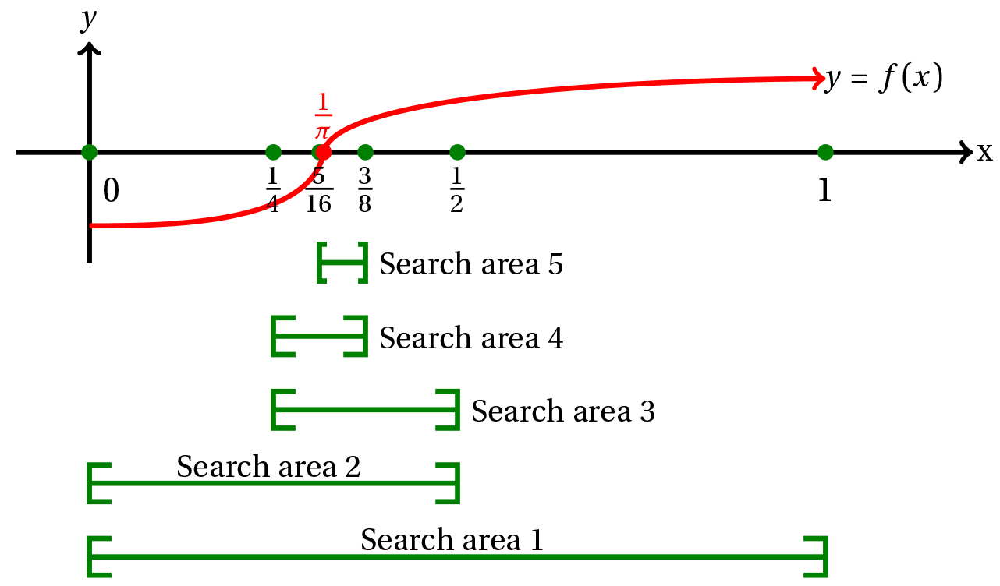

Lab 02 - Algorytmy
Lab 02 - Algorytmy
Przydatne metody klasy std::string
string::find(...)
Metoda find pozwala znaleźć w string-u pierwsze wystąpienie znaku lub ciągu znaków (w
zależności od tego, czy przekażemy jako argument pojedynczy znak - char lub ciąg znaków -
std::string). Do przechowywania indeksu położenia znaku będziemy posługiwali się typem
size_t - typem całkowitym, bez znaku, zwracanym standardowo przez metody typu find,
size(), length() itp. Przykładowo:
std::string text = "Ala ma kota";
size_t position = text.find('a');
std::cout << "Pierwsze wystąpienie litery a znajduje się na pozycji " << position << std::endl;Opcjonalny drugi argument pozwala podać pozycję, od której rozpocznie się przeszukiwanie. Rozbudowując powyższy przykład, możemy rozpocząć przeszukiwanie od znaku następującego po poprzednim trafieniu, szukając tym samym kolejnego wystąpienia.
position = text.find('a', position + 1);
std::cout << "Kolejne: " << position << std::endl;W przypadku nie znalezienia żądanego znaku/ciągu, string::find() zwraca
wartość std::string::npos. Sprawdzając zwróconą wartość możemy łatwo zapętlić wyszukiwanie w
celu znalezienia wszystkich wystąpień:
position = 0; // zaczynamy wyszukiwanie od początku
// zapisujemy wynik wyszukiwania w zmiennej position, rozpoczynamy wyszukiwanie od znaku
// następującego po poprzedniej wartości position
while ((position = text.find('a', position + 1)) != std::string::npos) {
// wyszukujemy tak długo, jak find() zwraca wartości różne od npos
std::cout << "Trafienie: " << position << std::endl;
}string::substr(...)
Metoda susbstr zwraca fragment oryginalnego napisu, zgodnie z przekazanymi wartościami - indeksem
początku fragmentu, oraz, opcjonalnie - jego długością.
Przykladowo:
std::string text = "Ala ma kota";
std::string text2 = text.substr(7); // "kota" - od pozycji 7 do końca
std::string text3 = text.substr(7, 3); // "kot" - od pozycji 7, 3 znaki
size_t position_of_ma = text.find("ma"); // 4
std::string text4 = text.substr(position_of_ma); // od początku wyrazu "ma" do końcaPrzykład wczytywania pliku csv
Jest wiele możliwości wczytywania plików, poniżej znajdziecie propozycję, która może być użyta do wczytania plików, gdzie dane mają układ tabelaryczny tzn. każdy wiersz zawiera tą samą liczbę danych, które oddzielone są separatorem (najczęściej przecinkiem lub średnikiem). W przykładzie wczytany zostanie wczytany kursy_usd_eur.csv zawierający w każdym wierszu dane opisane w pierwszym wierszu (nagłówku):
data- data notowań1USD- kurs dolara w PLN1EUR- kurs w euro w PLNpelny numer tabeli- numer tabeli kursów wg NBP
Wszystkie elementy są oddzielone przecinkami.
Dane zostaną wczytane do wektora, którego element jest strukturą z atrybutami odpowiadającymi kolumnom opisanym powyżej:
struct Exchange_rate
{
std::string date;
double usd;
double eur;
std::string table_id;
};Do wczytania może zostać użyty następujący kod, który otwiera plik i wczytuje najpierw cały wiersz a następnie
zamienia go na strumień używając klasy std::stringstream i dane z wiersza wczytuje funkcją
std::getline, której trzecim argumentem jest separator (domyślnie separatorem jest znak końca linii
(\n) stąd funkcja wczytująca cały wiersz ma tylko 2 argumenty). Dana wczytana za pomocą
std::getline jest wartością typu string, stąd w przypadku danych np. numerycznych musi zostać
skonwertowana (np. przy użyciu funkcji std::stod lub std::stoi).
W przypadku środowiska Qt Creator, plik należy umieścić w tym samym katalogu co katalog kompilacji projektu,
który jest tworzony obok katalogu ze źródłami (np.
build-nazwa_projektu-Desktop_Qt_5_13_2_MinGW_64_bit-Debug) lub podać pełną ścieżkę, np.
C:/Users/nazwa_uzytkownika/Downloads/kursy_usd_eur.csv.
std::fstream file("kursy_usd_eur.csv", std::fstream::in);
std::vector<Exchange_rate> rates;
if (file.is_open()) {
std::string line;
std::getline(file, line); // wczytuje pierwszą linię z nagłówkiem i ją ignoruje
while (std::getline(file, line)) {//wczytuje kolejne linie aż do końca pliku
std::stringstream str(line);//tworzy strumień, którego źródłem jest wczytana linia
Exchange_rate er;
std::getline(str, er.date, ','); //wczytuje date (pierwszy element wiersza)
std::string double_str;
std::getline(str, double_str, ','); // wczytuje kurs USD (jako tekst)
er.usd = std::stod(double_str); //zamiana na string->double
std::getline(str, double_str, ','); // wczytuje kurs EUR (jako tekst)
er.eur = std::stod(double_str); //zamiana na string->double
std::getline(str, er.table_id, ','); // wczytuje ostatnią kolumnę z numerem tabeli NBP
rates.emplace_back(er); //dodaje element do kolekcji
}
}Uwaga, wykonanie kodu wymaga dołączenia następujących plików nagłówkowych: <fstream>,
<iostream>, <sstream>, <vector>
🛠🔥 Zadania do samodzielnego wykonania 🛠🔥
🛠 Zadanie 1: palindrom
Napisz funkcję is_palindrome sprawdzającą czy podany napis jest palindromem:
Przykładowe użycie:
std::string word = "racecar";
if (is_palindrome(word)) {
std::cout << "To palindrom!" << std::endl;
} else {
std::cout << "Nope" << std::endl;
}Wersja zaawansowana:
Ignoruj spacje i wielkość znaków:
std::string sentence = "Never odd or even";
is_palindrome(word); // true🛠 Zadanie 2: znalezienie wszystkich wystąpień znaku
Napisz funkcję find_all zwracającą indeksy wszystkich wystąpień danego znaku
Przykładowe użycie:
std::string input = "Ala ma kota";
std::vector<size_t> pos = find_all(input, 'a'); // wynik: {2, 5, 10}🛠 Zadanie 3: szukanie najdłuższego wyrazu
Napisz funkcję find_longest_word zwracającą najdłuższy wyraz znaleziony w przekazanym do niej ciągu.
Przykładowe użycie:
std::string input = "Ala ma kota kot jezdzi na Roombie";
std::string longest = find_longest_word(input); // "Roombie"Podpowiedź: Sprawdź w dokumentacji metody string::find() oraz
string::substr().
🛠 Zadanie 4: podział napisów
Napisz funkcję split pozwalającą podzielić napis wejściowy na fragmenty i zwracającą wektor napisów.
Domyślnym separatorem fragmentów powinna być spacja, ale funkcja powinna mieć opcjonalny argument definiujący
znak separatora.
Przykładowe użycie:
std::string sentence = "Ala ma kota";
std::vector<std::string> words = split(sentence); // wynik: {"Ala", "ma", "kota"}
std::string csv = "Mount Everest,8848,1953";
std::vector<std::string> data = split(csv, ','); // wynik: {"Mount Everest", "8848", "1953"}Podpowiedź: Sprawdź w dokumentacji metody string::find() oraz
string::substr().
🛠 Zadanie 5: znajdź i zamień
Napisz funkcję find_and_replace pozwalającą podmienić szukaną frazę w napisie wejściowym na inną i
zwracającą napis po modyfikacji.
Przykładowe użycie:
std::string input = "Ala ma kota, kot zjadl Ale!";
std::string output = find_and_replace(input, "kot", "hefalump");
// wynik: "Ala ma hefalumpa, hefalump zjadl Ale!"Podpowiedź: Sprawdź w dokumentacji metody string::find() oraz
string::replace().
🛠 Zadanie 6: Sortowanie bąbelkowe
Napisz funkcję sortującą przekazany do niej wektor liczb typu double przez sortowanie bombelkowe (
͡° ͜ʖ ͡°)
Algorytm sortowania bąbelkowego porównuje kolejno sąsiednie pary elementów i zamienia je, jeśli są ułożone w złej kolejności. Operacja powtarzana jest na całym zbiorze aż do momentu, kiedy w całym zbiorze nie zostaną zamienione żadne elementy. Ponieważ z każdą iteracją największy element "wypływa" na koniec kolekcji, każda kolejna iteracja może pomijać coraz więcej elementów z końca zbioru.
Poniżej przedstawiono schemat blokowy algorytmu (kliknij na obrazek aby powiększyć):
{kind=link}
Przeanalizuj schemat, zastanów się za pomocą jakich pętli można opisać przebieg algorytmu.
🛠 Zadanie 7: Przeszukiwanie binarne
Napisz funkcję binary_search znajdującą zadaną wartość w posortowanej rosnąco kolekcji - wektorze
double - i zwracającą jej indeks. Wykorzystaj algorytm przeszukiwania binarnego, który dzieli
przeszukiwany zbiór na połowy, aż dotrze do poszukiwanego elementu:
- Sprawdź wartość środkową w kolekcji. Jeśli jest:
- poszukiwaną wartością: koniec algorytmu
- większa od poszukiwanej wartości: poszukiwany element znajduje się w pierwszej połowie kolekcji
- mniejsza od poszukiwanej wartości: poszukiwany element znajduje się w drugiej połowie kolekcji
- Twój nowy zbiór to wybrana połowa.
- Wróć do kroku 1 z nowym zbiorem wejściowym, aż do znalezienia poszukiwanego elementu lub wyczerpania możliwości.
Przykładowo, dla zbioru 1; 2; 5; 8; 9; 11; 15 i szukanego elementu 5:
| indeks | 0 | 1 | 2 | 3 | 4 | 5 | 6 |
|---|---|---|---|---|---|---|---|
| wartość | 1 | 2 | 5 | 8 | 9 | 11 | 15 |
Wartość środkowa: 8, wybieramy lewą połowę zbioru
| indeks | 0 | 1 | 2 |
|---|---|---|---|
| wartość | 1 | 2 | 5 |
Wartość środkowa: 2, wybieramy prawą połowę zbioru
| indeks | 2 |
|---|---|
| wartość | 5 |
Wynik: wartość 5 znajduje się na pozycji 2
Pamiętaj, że zbiory mogą mieć parzystą lub nieparzystą liczbę elementów oraz o przypadku, gdzie nie szukany
element nie znajduje się w zbiorze - zwróć wtedy indeks -1.
🛠 Zadanie 8: Kursy walut
- Wczytaj plik kursy_usd_eur.csv zgodnie z wytycznymi z wprowadzenia
- Posortuj plik względem kursu USD modyfikując algorytm sortowania bąbelkowego - twórz w tym celu 2 funkcje
sort_usd(rates)orazsort_eur(rates)sortująca wektor z danymi kursów wg kursu USD i EUR. - Wyświetl 10 dni (datę oraz wartość), w których kurs USD był najwyższy
- Wyświetl 10 dni (datę oraz wartość), w których kurs EUR był najniższy
- Użyj przeszukiwania binarnego żeby sprawdzić, w którym dniu kurs USD wynosił 3.9011PLN
🛠 Zadanie 9: Temperatury
- Wczytaj plik temp02-2020.csv zawierający dane z pewnej stacji pogodowej rejestrowane w lutym 2020 roku. Dane powinny zostać umieszczone w wektorze z elementem strukturalnym odpowiadającym poszczególnym kolumnom. Przeanalizuj pierwszy wiersz pliku i określ co zawiera każda z kolumn oraz jaki jest separator
- Określ minimalną, maksymalną oraz medianę temperatur. Sugestia: posortuj wektor danych względem temperatury.
🛠 Zadanie 10: Znajdywanie miejsca zerowe wielomianu metodą bisekcji
-
Napisać funkcję
std::vector<double> p = get_poly(n), gdziepjest wektorem współczynników wielomianu,nliczbą elementów do pobrania od użytkownika (i rzędem wielomianu+1) -
Napisać funkcję
double res = poly(x,p), gdziepjest wektorem współczynników wielomianu rzędun = p.size()-1, axwartością, dla której należy obliczyć wartość wielomianu:y(x) = p[0] + p[1] * x + p[2] * x^2 + ... + p[n] * x^n; -
Napisać funkcję:
vector<double> zeros = zero(x_min,x_max, p, step); //oraz funkcja pomocnicza double x=zero_r(x1,x1+step,p);- funkcja
zero(...)przeszukuje zakres wielomianupodx_mindox_maxz krokiemstepi zwraca wektor zawierający wszystkie miejsca zerowe wielomianu w tym zakresie. - gdy znajdzie taką para
x1 = x_min+k*stepix2 = x_min+(k+1)*step, dla której zmienia się znak wielomianu, wywołuje dla tego przedziału rekurencyjną funkcjęzero_r(bottom,top,p). - funkcja
zero_r(bottom,top,p)wyznacza kolejne przybliżenia miejsca zerowego wielomianupmetodą przeszukiwania binarnego.- W każdym kroku zakres poszukiwań (
top-bottom) funkcjazero_rwyznacza wartość miejsca zerowego dla początku, końca i środka przedziału - wywołuje rekurencyjnie zero_r w przedziale
(bottom,middle)lub(middle, top)w zależności os tego, w którym z nich leży miejsce zerowe (wartość wielomianu dla początku i końca przedziału maja różne znaki). - Funkcja rekurencyjna kończy działanie (zwraca wynik gdy szerokość zakresu ('top-bottom') będzie
<1e-9. - Przykładowy sposób działania algorytmu bisekcji przedstawiono na rysunku 
- W każdym kroku zakres poszukiwań (
- funkcja
{kind=link}
Autorzy: Jakub Tomczyński, Piotr Kaczmarek